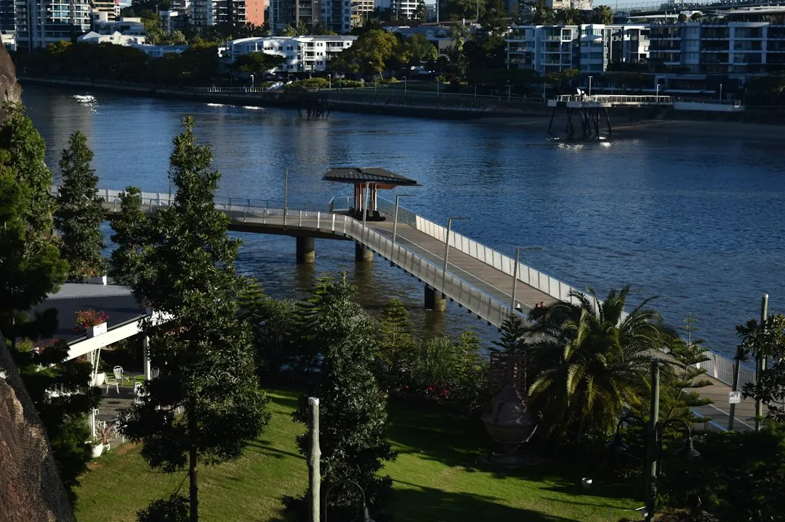

A retaining wall project should begin with the ground to be retained, the intended use of the space, access, drainage and anything above the wall. Boulder, sandstone, concrete sleeper and timber sleeper systems suit different site conditions and visual outcomes. Replacement work may also include removal, disposal, drainage and garden repairs. Before accepting a proposal, confirm design, approvals, construction, inspections, inclusions, exclusions, price and expected start arrangements in writing.
For homeowners comparing retaining walls brisbane options, the practical decision is how the wall will hold the ground, manage water and fit the way the garden needs to work.
Retaining Walls Brisbane Explained
A useful starting point is the project information published by Boulder Walls Brisbane. The wall should be considered in relation to the level change, the space you want to create and the route materials need to take to the work area.
A raised garden bed, a level lawn, a replacement for an old wall and a series of usable garden levels can require different conversations. Describe whether the ground drops away, whether the existing wall is leaning and what you want to do with the area after construction. Approximate dimensions are helpful, even when you have not selected a material.
Include anything above the wall, such as a driveway or another structure. That information can affect what needs to be investigated before a firm proposal is prepared. A wall face should not be judged on appearance or front-face price alone. The retained ground, access, drainage and the work around the wall all belong in the brief.
Compare the main wall systems
Natural boulders create an irregular, planted-garden feel and leave room to place large stones. Sandstone blocks can provide an even row of blocks or a rougher stone finish, planned around the garden levels. These options may suit a landscape where the wall is intended to read as part of the garden.
Concrete sleepers sit between posts, while timber sleepers create a different garden edge. For either sleeper approach, the posts, connections, ground conditions and drainage need to suit the job. The visible finish is only one part of the system.
Replacement work has another layer. Removal and disposal of the old wall may be substantial parts of the work, and the surrounding garden may need repairs. A terraced garden also needs the walls, paths and drainage considered together rather than as isolated pieces.
- Choose boulders when a natural rock appearance and planted setting are important.
- Consider sandstone when a block finish or more consistent face suits the levels.
- Discuss concrete or timber sleepers when the post and connection system is appropriate to the site.
- Ask for replacement, removal, drainage and garden repairs to be separated clearly in the proposal.
Drainage, approval and existing walls
Water behind a wall needs to be considered in the design. The wall system, the ground and the lawful outlet all matter, so ask what drainage the quote includes and where the water will go. Gaps between stones do not prove that drainage is adequate. Pooling, staining or soil loss should be described during the first discussion.
Approval questions should be checked against the full proposal. Brisbane City Council lists conditions for work that may not need building approval, but height is only one consideration. Loads above the wall, nearby buildings or walls, and pool fencing can also matter. A licensed building certifier can check whether the proposal is exempt before work begins.
An existing wall cannot be fully assessed from a close photograph. Buried footings and drainage may remain hidden, even when the visible face looks clear. A suitably qualified professional can assess what can be seen and explain what needs further investigation. If rebuilding is required, ask how removal and temporary support will be handled.
Access changes the construction brief
A wide street does not guarantee a clear route behind the house. Steps, narrow gates, tight turns and overhead obstructions can change how materials are moved. Provide wider photographs that show the wall area, the higher ground and the route from the street, rather than relying only on a close-up.
Access should be discussed alongside the wall material and the garden result. A site with limited movement space may need a different construction conversation from one with a straightforward route. Existing paths, fences, lawns and established planting should be identified if they need protection.
Ask who is responsible for protecting paths, dealing with removal, repairing garden areas and completing any necessary inspections. These details help distinguish a complete proposal from a price that covers only the visible wall face.
What to confirm before accepting a proposal
Before work is agreed, request a written scope that identifies the wall system, design responsibility, approval pathway, construction tasks and any inspections. Confirm the price, inclusions and exclusions, expected start arrangements and which party handles each part of the job.
A useful enquiry can stay simple. State your suburb, the result you want, the approximate height change, whether the wall is new or a replacement, how the work area can be reached and whether a driveway, structure, fence, path or planting sits nearby. Photos can be provided later if requested.
Do not treat a callback request as confirmation that a provider is available, that work will start on a particular date or that a proposal has been accepted. Those points should be confirmed separately after the site and scope have been discussed.
- Describe the change. Explain whether you need a new level, a replacement wall or another way to use the yard.
- Show the whole site. Provide the wall area, higher ground, approximate dimensions and route from the street.
- Discuss workable options. Confirm material choices, access and whether a site assessment is needed before a firm quote.
- Confirm the proposal. Check the price, inclusions, exclusions, responsibilities and expected start arrangements in writing.
| Option | Useful starting question | Details to confirm |
|---|---|---|
| Boulder wall | Would a natural rock appearance suit the garden levels? | Stone placement, retained ground, access and drainage |
| Sandstone wall | Would an even or rougher block finish fit the space? | Garden levels, block arrangement, drainage and access |
| Concrete sleeper wall | Does a post and sleeper system suit the ground? | Posts, connections, drainage and approval questions |
| Timber sleeper wall | Is a timber garden edge suitable for the site? | Ground, drainage, future care and surrounding repairs |
| Wall replacement | What must be removed and restored? | Removal, disposal, drainage, temporary support and garden repairs |
Common questions
When should drainage be discussed? Discuss it before choosing a wall system or accepting a quote. Ask what drainage is included, how the ground will be assessed and where the water will lawfully go.
Can an old retaining wall be assessed from photos? Photos can begin the discussion, but they cannot show buried footings or drainage. A suitably qualified professional may need to inspect the wall and explain whether rebuilding is required.
Does every wall need building approval? The answer depends on the full proposal. Brisbane City Council identifies conditions for some work that may not need approval, while loads above the wall, nearby structures and pool fencing can also matter. Ask a licensed building certifier to check the proposal.
What should be included in a replacement quote? Ask whether the scope includes removal and disposal, drainage, temporary support, protection of paths and repairs to lawns, fences or planting. Confirm exclusions in writing.
What information helps with an initial enquiry? Provide the suburb, intended result, approximate height change, access details, nearby structures and whether the wall is new, leaning or being replaced.
This guide covers material choices, drainage, approval questions, access and quote preparation for residential retaining-wall projects in Brisbane.